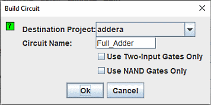

יצירת מעגל
הלחצן בנה מעגל יבנה מעגל שהשערים שלו תואמים לערך הנוכחי ביטויים שנבחרו עבור כל פלט. הכניסות והיציאות של המעגל יוצגו בסדר מלמעלה למטה בהתאם לאופן שבו הם מופיעים בכרטיסיות קלט ופלטים. באופן כללי, המעגל הבנוי יהיה אטרקטיבי; ואכן, יישום אחד של מודול הניתוח המשולב של Logisim הוא לייפות מעגלים מצוירים בצורה גרועה. ובכל זאת, כמו בכל עיצוב אוטומטי, זה לא יבטא את הפרטים המבניים ש מעגל שנמשך לאדם יעשה זאת.

When you click the Build Circuit button, a dialog box will appear prompting you to choose which project where you want the circuit and the name you wish to give it.

אם תקליד את השם של מעגל קיים, המעגל הזה יוחלף (לאחר שלוגיסים יבקש ממך לאשר שאתה באמת רוצה לעשות זאת).
תיבת הדו-שיח בנה מעגל כוללת שתי אפשרויות.
- האפשרות השתמש בשערים עם שני כניסות בלבד מציינת שברצונך שכל השערים ייבנו כך יש שתי כניסות. (לא שערים, כמובן, מהווים חריג לכלל זה.)
- האפשרותהשתמש בשערי NAND בלבד מציינת שתרצה שהיא תתרגם את מעגל לתוך אחד באמצעות שערי NAND בלבד. אתה יכול לבחור בשתי האפשרויות אם אתה רוצה להשתמש רק ב-NAND בעל שתי כניסות שערים.
Logisim לא יכולה לבנות מעגל NAND בלבד עבור ביטוי המכיל אופרטורים XOR כלשהם. אפשרות זו תהיה לכן יהיה מושבת אם ביטויי פלט כלשהם מכילים XORs.
הבא: מדריך למשתמש.